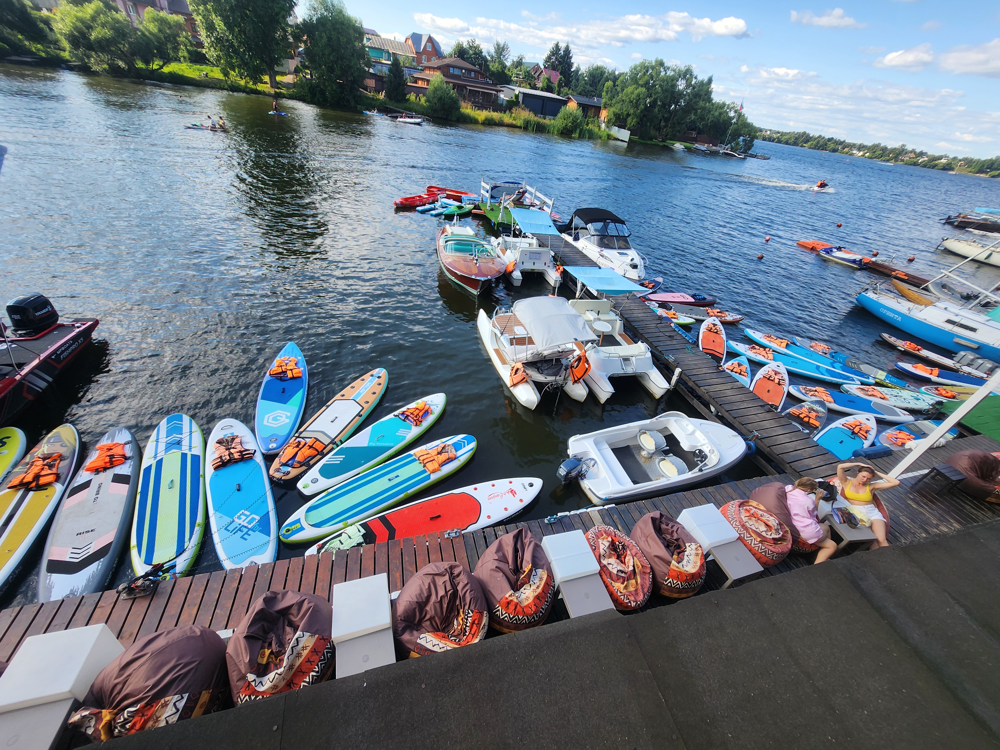

Камера станцииОткрыть камеру ↗Powered by Ivideon

Больше,чем прокат!
ВОДНАЯ ПЛОЩАДКА · ОРЕХОВАЯ БУХТАВЫБИРАЙ
к хорошим
людям
ВЫБИРАЙ
СВОЙ СТАРТ
Водные приключения
на Пироговском
водохранилище
к хорошим
людям
Яхт-клуб «Ореховая бухта»
Без предоплаты · По подтверждению сотрудникаПЕРЕД ПРОГУЛКОЙ
Уточнить обстановку ↗СТАРТ сейчас
Температура воды
Пока не измерена
Замер у станции появится здесьЧасы работы в сезон
09:00–22:00
Выход на воду — по погоде.Наличие техники уточнит сотрудник.
Уже знаете, когда приедете? Выбрать дату и время +
ВАША АКВАТОРИЯ
Пироговское водохранилище
Выбери свой маршрут.
Старт и возвращение — на станции.
Маршруты станции «СТАРТ»Время ориентировочное
ВЫБЕРИТЕ МАРШРУТ
Короткая прогулочная петля от станции с возвращением в Ореховую бухту.
Открыть все маршруты крупно ↗ПРОКАТ И ЦЕНЫ
Наш флот
Больше, чем просто SUP.
11 категорий для вашего отдыха.
Весь флот Ещё 7 категорий +
Цены одинаковые в будни и выходные. Оплата на станции: наличными или картой.
СВОЯ ДОСКА — СВОЙ БЕРЕГ
Хранение своего САПа — условия и тарифы ↗Хранение личных САПов
Оставляйте доску на станции. Выберите удобный вариант хранения на сезон.
БОЛЬШЕ ВРЕМЕНИ НА ВОДЕ
Часа мало? Оставайтесь.
Три тарифа для обычного САПа.
Безлимит на день
Никуда не спешить.
Кататься и наслаждаться.
5 000 ₽ / день
- Катание на станции до закрытия
- Жилет, весло и инструктаж
- Без предоплаты
Безлимит на сезон
Вода становится
вашей привычкой.
20 000 ₽ / сезон
- Именной абонемент: 1 апреля — 1 ноября
- Любой день, 09:00–22:00, без записи
- Все доски заняты? Дождитесь свободной
САП с собой
Положить в машину.
Найти свой берег.
5 000 ₽ / день
- Заберите САП на несколько дней
- Залог — 5 000 ₽
- Выдача и возврат на станции
ХОРОШО И НА БЕРЕГУ
Комфорт на берегу
Яхт-клуб «Ореховая бухта»
01
Раздевалка
Переодеться перед прогулкой
02
Камера хранения
Оставить вещи на берегу
03
Кафе и лаунж
Продолжить день у воды
04
Туалет
На территории станции
Уже включено в отдыхСпасательные жилетыГидрочехлы для телефонаШляпы от солнцаWi-Fi
НЕ ТОЛЬКО ПРОКАТ
Афиша и клубы
Концерты, шахматы и живопись.
Ближайшие даты уточняйте у нас.
Можно ли с детьми?
Да, можно. Можно приезжать даже с грудничками. У нас есть спасательные жилеты для детей любого возраста.
Можно ли с животными?
Да, можно. Разрешены животные весом до 2 кг.
Как забронировать и нужна ли предоплата?
Выберите технику, дату и время. Бронь действует после подтверждения сотрудником. Предоплата не нужна, оплата на станции наличными или картой.
Что входит в аренду САПа?
САП, весло, спасательный жилет, защитный чехол для телефона и инструктаж перед выходом на воду.
При аренде SUP гидрокостюм предоставляется бесплатно.
Что делать, если планы изменились?
Отмена бесплатная. Просим предупредить хотя бы за два часа по телефону +7 (903) 963-31-35.
А если я опаздываю?
Держим бронь 15 минут. Если предупредите, сотрудник согласует новое время. Без предупреждения техника может быть выдана другому гостю. Прокат считаем с фактической выдачи; при следующей брони предложим сокращение с пересчётом или перенос.
Что будет при плохой погоде?
При небезопасной погоде сотрудник приостанавливает выдачу. Предложим перенос или отмену прогулки.
Нужно ли записываться с сезонным абонементом?
Нет. Именной абонемент действует с 1 апреля по 1 ноября, с 09:00 до 22:00. Время катания не ограничено до закрытия. Если все САПы заняты, нужно дождаться свободного. «САП с собой» — отдельный тариф.
ДО ВСТРЕЧИ НА ВОДЕХорошие дни
Хорошие дни
начинаются здесь.
Яхт-клуб «Ореховая бухта»
Мытищи, Болтино, Ореховая ул, д.5
+7 (903) 963-31-35
Ежедневно в сезон · 09:00–22:00
С 1 апреля по 1 ноября
Как пройти к станции
От поста охраны следуйте по красной линии на схеме до станции «СТАРТ».
 Нажмите на схему, чтобы увеличить ↗
Нажмите на схему, чтобы увеличить ↗